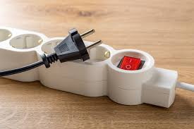

Draper stuns two-time defending champ Alcaraz to reach Indian Wells final
Jack Draper ended Carlos Alcaraz's bid for a rare Indian Wells ATP Masters three-peat on Saturday, toppling the Spaniard to book a title clash with Holger Rune..
Read moreLatest news and more!

Investigations finds counterfeit electrical goods, appliances widely available KZN task team focuses on Tripartite Alliance US Democrats fume as some in party cave Trump on spending bill Norris holds off Verstappen to win rain-hit Australian Grand Prix FM We are working on mending relationship with US - Ramaphosa Outa uncovers systemic fraud at testing stations Investigations finds counterfeit electrical goods, appliances widely available KZN task team focuses on Tripartite Alliance US Democrats fume as some in party cave Trump on spending bill Norris holds off Verstappen to win rain-hit Australian Grand Prix FM
Jack Draper ended Carlos Alcaraz's bid for a rare Indian Wells ATP Masters three-peat on Saturday, toppling the Spaniard to book a title clash with Holger Rune..
Read more
France full-back Thomas Ramos scored 20 points as France bulldozed Scotland 35-16 on Saturday in Paris to claim the Six Nations title..
Read more
Opposition parties are opposing the 1 percentage-point VAT hike over two years, threatening the approval of Finance Minister Enoch Godongwana's budget speech..
Read more
Canada is reviewing a major purchase of US-made F-35 combat planes amid serious tensions with the Trump administration, a spokesperson for the Canadian defense ministry told AFP..
Read more
EFF leader Julius Malema has issued a stern warning to those who are currently supportive of former president Jacob Zuma..
Read moreThe economist J.K. Galbraith once wrote, “Faced with a choice between changing one’s mind and proving there is no need to do so, almost everyone gets busy with the proof.”
Leo Tolstoy was even bolder: “The most difficult subjects can be explained to the most slow-witted man if he has not formed any idea of them already..
Read moreBy Benjamin Spall the co-author of My Morning Routine, now writing Endnotes on Substack. He is a contributor to the New York Times, Entrepreneur, CNBC, Business Insider, and more.

President Ramaphosa says withdrawing troops from the DRC is not defeat. He says it should be seen as a build-up to the peace process. SADC leaders decided to end its SamiDRC mission in a phased withdrawal. The inter-governmental..
Read morePolice have dismantled an illegal liquor manufacturing business that was reportedly supplying counterfeit alcoholic beverages to multiple outlets in..
The accused are Phumelele Myeza, 37, Paul Bones, 49, Keamogetswe Irene Ledwaba, 49, Siphesihle Phumzile Dlamini, 30, and Phiwe Mkhuzangwe, 37...
Welcome to Soweto Podcast the voice of Soweto with your host Sipho Hadebe! Join us for real conversations, and inspiring stories from the heart of South Africa